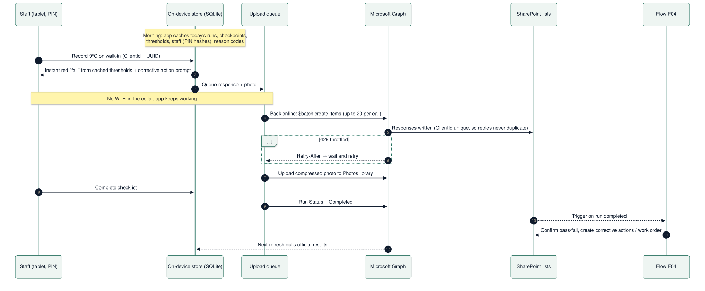
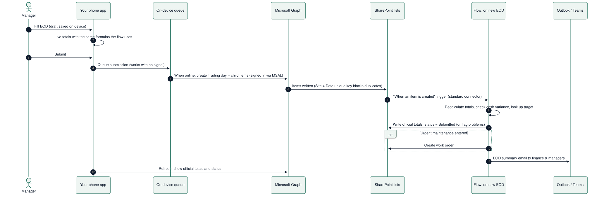
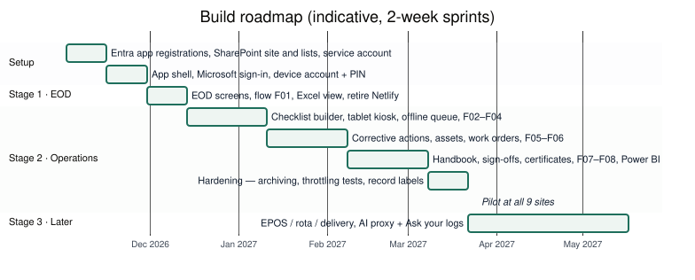

Our own tablet, phone and web apps on top of Maginhawa's Microsoft 365: SharePoint for data and files, Power Automate for business logic, Entra ID for sign-in. Includes the SharePoint list design (31 lists, 7 libraries), the flow catalogue, the EOD trading module, security, scalability and limits, licensing and the build order.
Decision: we build our own apps (a kitchen tablet app, a phone app and a web console) and keep Maginhawa's Microsoft 365 as the backend: SharePoint stores the data and files, Power Automate runs the business logic, and Entra ID handles sign-in. There is no separate server or database to run. Users get fast, purpose-built apps that work offline. Finance keeps Excel, Outlook and Power BI. Running costs stay inside the existing Microsoft 365 licences as long as we stick to standard connectors. This setup comfortably handles Maginhawa's 9 sites. With the design rules in the scalability section it stretches to roughly 20–40 sites. It is an internal tool. If the product is later sold to other restaurants, or grows past ~50 sites, the data moves to a database. The Postgres design for that is kept in the postgres-option/ folder, and keeping all data access in one module makes the move a backend swap rather than a rewrite. Several regulatory values, such as temperature limits and inspection intervals, are still [verify] items from the product plan. They live as data in SharePoint, never in code.
Users open our apps. The apps sign in through Microsoft Entra ID (using the MSAL library), then use the token to call the Microsoft Graph API, which reads and writes the SharePoint lists and libraries. Power Automate sits beside SharePoint, not inside Graph: flows start when items change or on a schedule, write results back to SharePoint, and send emails and alerts. Excel and Power BI read SharePoint for finance.


| Layer | Choice | Why | Notes |
|---|---|---|---|
| Tablet + phone app | Expo (React Native), TypeScript | One codebase for iPad and Android tablets and phones. Native speed, an offline store and the camera. Over-the-air updates for quick fixes | The tablet layout is a shared kiosk; the phone layout is for managers |
| Web console | Next.js (React) + Tailwind; a data-grid component for the spreadsheet view; ExcelJS export | Builder, spreadsheet view, finance and admin screens. Shares types and the data module with the mobile app | Hosted on Netlify (already used) or Azure Static Web Apps |
| Sign-in | Entra ID via MSAL | Managers, finance and admins use their own Microsoft accounts. Each kitchen tablet uses a site device account, and staff identify themselves with a PIN inside the app | Confirm device-account licensing with Maginhawa's Microsoft partner |
| Data access | Microsoft Graph API (SharePoint list items and drive files) | A standard API, so no premium licence and no public URLs. Supports $batch (20 requests per call) and Retry-After throttling |
Wrapped in one data module in our code (rule 9) |
| Data | SharePoint site "Maginhawa Ops": 31 lists + 7 document libraries | Structured records in lists; photos, policies, certificates, invoices and PDFs in libraries | Version history on; indexes and unique keys defined below |
| Business logic | Power Automate: 11 flows, owned by a service account | Calculations, checks, alerts, emails, scheduling and escalation | Triggered by list changes or on a schedule, not by public HTTP calls |
| Finance views | Excel (Power Query reading the lists) + Power BI | Finance keeps working in Excel; dashboards for sales vs target, wage %, missed checks and repairs | Power BI Pro licences for viewers (check the existing licence) |
| Notifications | Outlook and Teams connectors (standard) | EOD emails, missed-check alerts, reminders and contractor emails | SMS via Twilio is premium, so it comes later |
| Device management | Intune (if licensed): iPad Guided Access / Android kiosk mode | Locks the shared tablet to our app | |
| Later, optional | Azure Function "AI proxy" + Claude API; EPOS, rota and delivery connectors; Xero/QuickBooks/Sage | The first small piece of our own backend, needed only because API keys can't live in the apps | Stage 3 |

Staff list that is cached on the device, so login works offline. The session auto-locks after inactivity. Every record stores the staff member, the device and both timestamps.AppRole column on Staff. Kiosk-only staff need no Microsoft licence.Kitchens and cellars have poor signal. The apps never wait on the network:
$batch when the connection returns. Each record carries a ClientId (UUID) stored in a unique column, so retries never create duplicates.Photos library.Retry-After time and tries again. Nothing is lost.
One SharePoint site, "Maginhawa Ops", holds everything. Lists store structured records, and libraries store files. Each table in the Postgres design maps to a list, so moving to a database later is a straight copy. The full column-by-column specification is in Appendix A and in the machine-readable file sharepoint/sharepoint-lists.json, which will also drive the provisioning script.
| Group | List | Purpose | Written by | Unique key |
|---|---|---|---|---|
| Reference | Sites | One row per restaurant; drives rules, targets and settings | Admin (console) | SiteCode |
| Reference | Staff | Everyone who uses the apps, incl. kiosk-only staff without Microsoft accounts | Admin / Manager | – |
| Reference | Devices | Registered kiosk tablets and phones | Admin | – |
| Reference | Targets | Daily targets per site (imported from finance Excel or edited in console) | Flow F09 / Finance | SiteCode|yyyy-mm-dd |
| Reference | ReasonCodes | Discount / comp / void reasons (23 discount/comp + 15 void codes from the current form) | Finance / Admin | – |
| Reference | DeliveryPlatforms | Deliveroo, Uber Eats, Just Eat… | Finance | Platform name |
| Reference | RulesThresholds | Food-safety limits per nation (data, not code); consultant-verified | Admin (consultant sign-off) | Nation|CheckCode |
| Checklists | ChecklistTemplates | Checklist definitions (opening, closing, cleaning, food safety, custom) | Admin / Manager (console builder) | – |
| Checklists | Checkpoints | Questions inside a template version — the customisable checkpoints with media | Admin / Manager (builder) | – |
| Checklists | Schedules | When each checklist is due at each site | Admin / Manager | – |
| Checklists | ChecklistRuns | One instance of a checklist on a day (created each morning by flow F02) | Flow F02 creates; app completes | SiteCode|yyyy-mm-dd|ScheduleId |
| Checklists | Responses | Every answer — the compliance record (largest list) | App (append-only by convention + Purview record label) | ClientId |
| Checklists | CorrectiveActions | What was done about a failed check | App + flows F04/F05 | – |
| Checklists | DayClosures | Ops end-of-day sign-off per site | App + flow F01 | SiteCode|yyyy-mm-dd |
| Checklists | HandoverNotes | Shift handover log | App | – |
| Maintenance | Assets | Equipment register with QR sticker per unit | Manager / Admin | QRCode |
| Maintenance | Contractors | Refrigeration, gas, electrical, extraction, pest… | Manager / Admin | – |
| Maintenance | WorkOrders | Repairs: from fault report, failed check, statutory due or EOD note | App + flows F05/F06 | Reference WO-2026-00123 |
| Maintenance | ComplianceItems | Statutory calendar: gas CP42, TR19, EICR, fire alarm, emergency lighting, LOLER, PSSR, legionella, pest | Admin / flow F07 | – |
| Maintenance | Invoices | Contractor invoices for the Finance role | Finance | – |
| Maintenance | VisitorLog | Contractor and visitor sign-in | App | – |
| Trading (EOD) | TradingDays | One per site per service date — replaces the Netlify form's Excel row | App creates; flow F01 writes official totals | SiteCode|yyyy-mm-dd |
| Trading (EOD) | TradingSessions | Lunch / dinner figures and cash | App; flow F01 adds net & variance | SiteCode|yyyy-mm-dd|Session |
| Trading (EOD) | Adjustments | Discounts, comps and voids as rows (were text blobs) | App | ClientId (UUID) |
| Trading (EOD) | DeliverySales | Per platform per day | App; flow F01 adds estimated net | SiteCode|yyyy-mm-dd|Platform |
| Trading (EOD) | DeliveryRefunds | Refund requests from delivery platforms | App | – |
| Trading (EOD) | ShiftStaff | Who worked each session (fixes lunch managers being dropped) | App (rota later) | – |
| Trading (EOD) | Feedback | Service, kitchen, staff, complaints, maintenance notes | App; flow F01 links work orders | – |
| People & handbook | PolicyAcknowledgements | E-signed policy sign-offs | App | PolicyFileId|Version|StaffId |
| People & handbook | StaffCertificates | Level 2/3 food hygiene, personal licence, first aid… | Manager | – |
| People & handbook | FitnessToWork | Illness exclusion / return to work — restricted to Owner/Admin | Manager (restricted list) | – |
Document libraries
| Library | Holds | Notes |
|---|---|---|
| Photos | Check, fault and work-order photos | Folders Site/yyyy/mm; images compressed on device (~300 KB) |
| HowToMedia | Images and short videos attached to checkpoints | Read-only for staff |
| Policies | Handbook and policies (Word/PDF) with metadata: Category, RequiresAck, AppliesToRoles | Major versions only; publishing a major version triggers flow F08 |
| Certificates | Staff and contractor certificates (gas CP42, TR19, EICR…) | Linked from StaffCertificates / ComplianceItems |
| Invoices | Contractor invoice PDFs | Finance + Admin only |
| Reports | Generated EOD, day-closure and EHO pack PDFs | Written by flows |
| Archive | Yearly CSV/list exports for archived years | Created by flow F12 |
Design conventions
Title with "enforce unique values" switched on, for example BUN|2026-10-06 for a trading day, plus a ClientId for anything an offline device creates.Site and BusinessDate columns, and every query filters on them. Each list has at most 5 indexes including unique keys (SharePoint allows 20) and at most 5 lookup columns (a query allows 12).Supersedes column points to the old one, never an edit in place. Version history stays on.Responses, CorrectiveActions and submitted TradingDays. This blocks edits and deletes and makes the compliance record tamper-resistant.All flows are owned by a dedicated service account, so they don't consume a manager's daily allowance or stop working when someone leaves. They use standard connectors only (SharePoint, Outlook, Teams, Excel Online) unless marked premium.

| Flow | Trigger | What it does | Approx. runs per day (9 sites) |
|---|---|---|---|
| F01 EOD calculate & report | TradingDays item: Status → Submitted |
Reads sessions, adjustments, delivery, targets and site settings. Calculates net (discounts subtracted), covers, ASPH, food/drink %, delivery estimated net, total net, wage % and RAG, and net vs target. Flags discount lines that don't match the EPOS total and cash variances with no explanation. Writes official totals; creates work orders from maintenance feedback; emails the EOD summary | ~9 |
| F02 Create today's checklist runs | Daily 04:00 | Creates ChecklistRuns items from Schedules, skipping paused sites |
1 (creates ~54 runs) |
| F03 Late / missed checks | Every 15 min during trading hours | Marks overdue runs Missed or Auto-closed and alerts the duty manager (Teams or email) | ~60 |
| F04 Evaluate completed checklist | ChecklistRuns item: Status → Completed |
Re-checks that run's responses against RulesThresholds, sets FailedCount, creates corrective actions with re-check times and alerts the manager. One run per checklist, not per answer |
~54 |
| F05 Re-check & escalate | Every 15 min | Finds corrective actions past their re-check time with no passing re-check, or repeat failures on the same asset, and escalates them to a work order on that asset | ~60 (most do nothing) |
| F06 Work order dispatch & updates | WorkOrders item: Status changes |
Emails the contractor the job details (photos, asset, site contact), appends to the timeline and notifies the manager on resolution. Contractors reply by email or through a Microsoft Forms link (standard), so they need no login | ~5–15 |
| F07 Compliance & certificate reminders | Daily 07:00 | Sends reminders for ComplianceItems due within 30 days, expiring StaffCertificates and expiring asset warranties |
1 |
| F08 Policy sign-off requests | Major version published in Policies |
Notifies the affected roles and creates sign-off requests. A weekly chase covers anyone who hasn't signed | Occasional |
| F09 Import targets | Nightly 02:00 | Reads finance's targets workbook (Excel Online connector) and creates or updates Targets |
1 |
| F10 Weekly owner digest | Monday 07:00 | Summarises the week by site: sales vs target, wage %, missed checks, open repairs, expiring certificates | 1 |
| F12 Yearly archive | 1 January | Copies last year's high-volume items to archive lists or CSV in the Archive library, then clears the live lists |
1 per year |
Finance's existing Flows 2 and 3 (the targets lookup and emails) are replaced by F01, F09 and F10. During the switch-over, F01 can also append the same row to finance's current Excel table, so nothing breaks while they move to the new views.
Today's EOD form is a static Netlify page that calculates in the browser and posts JSON to a public Power Automate URL, which appends a row to Excel. A code review of it found five problems:
gross ÷ 1.2 × 0.55) and the wage target (35%) are hard-coded.The new module keeps the form's 23 discount/comp reasons, 15 W/NW void codes and staff positions as editable lists, and fixes the rest:
| Area | Old form | New module |
|---|---|---|
| Identity | Typed names | Signed-in Microsoft user; approvers are real people |
| Calculations | Browser only; net omits discounts | App preview, then flow F01 writes the official totals |
| Settings | 20% VAT, 55% delivery retention, 35%/30% wage thresholds in code | Settings in the Sites, DeliveryPlatforms and Targets lists |
| Line items | Text strings | Adjustments rows with ReasonCodes, amount, approver and time |
| Cash | Warning only | Variance written by F01. The app requires an explanation above 1p, and F01 flags it if missing |
| Duplicates | Possible | Unique Site + Date key |
| Maintenance notes | Text in an email | A Feedback item that F01 turns into a work order |
| Excel | The only data store | A view that reads the lists (Power Query) |

Do now, whatever else happens: regenerate the exposed Power Automate trigger URL.
The apps cannot hold an AI API key, because anyone could extract it from the app. So AI arrives in Stage 3 with the first small piece of our own backend: an Azure Function "AI proxy" in the UK South region. It holds the Claude API key, checks the user's Microsoft sign-in token and queries SharePoint through Graph as that user, so it can never see more than the person asking. That enables the features from the product plan:
Until then, Copilot in Power BI (it needs a specific paid capacity, so check) can answer natural-language questions over the finance dataset.
Sites.Selected), so the apps can't read anything else in the organisation.FitnessToWork) are open only to Owners/Admins. No item-level permissions are used, because they don't scale.Devices.Revoked).
Microsoft limits change, so check the current documentation before relying on any number below.
Expected volume at Maginhawa (9 sites, estimate): about 1,250 new list items a day (≈800 checklist answers plus runs, EOD rows, discounts/comps/voids and staff rows). That is about 460k items a year, plus about 80 photos a day, about 9 GB a year once compressed.
| Component | Limit | Risk at 9 sites |
|---|---|---|
| Our apps (Expo, Next.js on Netlify) | Effectively none | ✅ None |
| SharePoint list size | ~30 million items per list | ✅ Fine |
| 5,000-item list view threshold | Queries that don't filter on an indexed column fail once a list has more than 5,000 items; up to 20 indexes per list | ⚠️ Responses passes 5,000 within weeks. Index and always filter (rule 2) |
| Lookup columns per query | 12 | ✅ Max 5 per list in this design |
| Microsoft Graph throttling | Per-user and per-app limits; returns 429 + Retry-After |
✅ Low; the app retries (rule 7) |
| Power Automate daily action allowance | Per licence, charged to the flow owner; standard Microsoft 365 allowances are modest | ⚠️ Main risk. A flow per checklist answer would use thousands of actions a day (rule 1) |
| Flow trigger delay | SharePoint triggers poll, so a flow can take minutes to start on standard licences | ⚠️ Fine for EOD and alerts. The app shows an instant preview, so users never wait |
| Storage | Organisation pool ~1 TB plus extra per licence | ✅ Fine with on-device compression (rule 5) |
| Reporting across history | SharePoint isn't an analytics engine | ⚠️ Power BI imports on a schedule (rule 8) |
Rules that keep it scaling
Site, BusinessDate and Status, and always filter on them. Never load a whole list, in the app, the flows or Power Query.$batch (20 per call) and cache reference data on the device.Retry-After when throttled. The offline queue does this automatically.
When to move off SharePoint: at 50+ sites, when selling to other companies, when you need true record immutability without Purview, when you need heavy AI or analytics over history, or when flow allowances keep running out despite rules 1 and 6. Thanks to rule 9, the apps don't change.
| Item | Standard (in Microsoft 365) | Premium / extra |
|---|---|---|
| SharePoint, Outlook, Teams, Excel Online connectors | ✅ | |
| Graph API from our apps | ✅ | |
| Flows triggered by list changes or schedules | ✅ | Busy flows may need a premium/process licence (rule 6) |
| HTTP-trigger flows, SMS (Twilio), Word→PDF templates, Dataverse, custom connectors | £ Premium | |
| Power BI viewers | £ Power BI Pro (unless already licensed) | |
| Purview record labels, Intune, Conditional Access | Depends on plan (e.g. Business Premium / E3) | Check |
| Kitchen tablet device accounts | Confirm with the Microsoft partner | |
| Azure Function AI proxy (Stage 3) | £ Small Azure consumption + Claude API usage |

| Sprint (2 weeks) | Build |
|---|---|
| 1 | Entra app registrations (Sites.Selected), service account, SharePoint site and lists provisioned from sharepoint-lists.json, seed reference data (sites, reason codes, positions, platforms) |
| 2 | App shell (Expo + Next.js monorepo), MSAL sign-in, device account + PIN, the data module over Graph with an offline queue |
| 3 | EOD screens + F01 + Excel view; retire the Netlify form (Stage 1 quick win) |
| 4–5 | Checklist builder (console), tablet kiosk checklists with media, F02, F03, F04 |
| 6–7 | Corrective actions, assets + QR, work orders, contractors, F05, F06, day closure and spreadsheet view |
| 8–9 | Handbook and policies, sign-offs, certificates, F07, F08, F09, F10; Power BI dashboards |
| 10 | Hardening: indexes check, load test at 3× volume, throttling test, F12 archive dry run, Purview labels; pilot at all 9 sites |
| Stage 3 | EPOS, rota and delivery auto-fill; AI proxy + Ask your logs; statutory calendar, allergens, probes |
Sites.NetSalesRule.RulesThresholds and ComplianceItems value starts unverified until a consultant signs it off.Tags: unique = "enforce unique values" (indexed); indexed = column index; set by flow = written only by Power Automate.
Sites: One row per restaurant; drives rules, targets and settings. Written by: Admin (console).
| Column | Type | Notes |
|---|---|---|
Title (required) |
Text | Restaurant name, e.g. Bunso |
SiteCode (unique, required) |
Text | Short code used in keys, e.g. BUN |
Nation (required) |
Choice | England / Wales / Scotland / Northern Ireland (selects rules pack) |
Timezone |
Text | Europe/London |
FHRSId |
Number | FSA establishment id for rating sync |
Sessions |
Choice (multi) | Lunch, Dinner, All day |
VATRatePct |
Number | Default 20 |
WageTargetPct |
Number | Red above (default 35) |
WageAmberPct |
Number | Amber above (default 30) |
NetSalesRule |
Choice | GrossMinusSCTaxDiscounts (default) / GrossMinusSCTax — confirm with finance |
DayCloseTime |
Text | e.g. 23:30 — when EOD/missed-check jobs run |
Active (indexed) |
Yes/No |
Indexed (2): SiteCode, Active
Staff: Everyone who uses the apps, incl. kiosk-only staff without Microsoft accounts. Written by: Admin / Manager.
| Column | Type | Notes |
|---|---|---|
Title (required) |
Text | Full name |
Email (indexed) |
Text | Microsoft account (blank for kiosk-only staff) |
HomeSite (indexed) |
Lookup → Sites | |
Department |
Choice | Kitchen / FOH / Management / Finance / Admin |
Position |
Choice | Head chef, Sous chef, CDP, Commis, KP, Floor manager, Senior waiter, Waiter, Runner, Host, Bartender, RM, GM, AM, Duty manager, Supervisor |
AppRole (required) |
Choice | Staff / Manager / Admin / Finance / Owner |
PinHash |
Text | argon2 hash of 4-digit kiosk PIN (never the PIN) |
PreferredLanguage |
Text | en-GB default |
Active (indexed) |
Yes/No |
Indexed (3): Email, HomeSite, Active
Devices: Registered kiosk tablets and phones. Written by: Admin.
| Column | Type | Notes |
|---|---|---|
Title (required) |
Text | Label, e.g. Bunso kitchen tablet |
Site (indexed) |
Lookup → Sites | |
DeviceAccount |
Text | Site device Microsoft account (UPN) |
Platform |
Choice | iPadOS / Android / iOS / Web |
LastSeen |
Date/Time | Updated by app |
Revoked (indexed) |
Yes/No | Revoked devices are refused by the app |
Indexed (2): Site, Revoked
Targets: Daily targets per site (imported from finance Excel or edited in console). Written by: Flow F09 / Finance.
| Column | Type | Notes |
|---|---|---|
Title (unique, required) |
Text | Key = SiteCode|yyyy-mm-dd |
Site (indexed) |
Lookup → Sites | |
TargetDate (indexed) |
Date | |
NetSalesTarget |
Currency | |
GrossSalesTarget |
Currency | |
CoversTarget |
Number | |
WagePctTarget |
Number | Overrides site default |
Indexed (3): Title, Site, TargetDate
ReasonCodes: Discount / comp / void reasons (23 discount/comp + 15 void codes from the current form). Written by: Finance / Admin.
| Column | Type | Notes |
|---|---|---|
Title (required) |
Text | Label, e.g. Employee Dining up to 4 Food Only |
Kind (indexed, required) |
Choice | Discount / Comp / Void |
Scope |
Choice | Check / Item |
DefaultPct |
Number | 20 / 50 / 100; blank = chosen amount |
IsWaste |
Yes/No | Voids: W (waste) vs NW |
AppliesTo |
Choice | Food / Drinks / Food & drink |
NotePrompt |
Text | What the note must contain |
ApprovalRole |
Choice | Manager / Owner |
SortOrder |
Number | |
Active (indexed) |
Yes/No |
Indexed (2): Kind, Active
DeliveryPlatforms: Deliveroo, Uber Eats, Just Eat…. Written by: Finance.
| Column | Type | Notes |
|---|---|---|
Title (unique, required) |
Text | Platform name |
EstimatedNetPct |
Number | Replaces hard-coded 55% (net ≈ gross ÷ (1+VAT) × pct) |
PricesIncludeVAT |
Yes/No | |
Active |
Yes/No |
Indexed (1): Title
RulesThresholds: Food-safety limits per nation (data, not code); consultant-verified. Written by: Admin (consultant sign-off).
| Column | Type | Notes |
|---|---|---|
Title (unique, required) |
Text | Key = Nation|CheckCode |
Nation (indexed) |
Choice | |
CheckCode |
Text | cold_hold, hot_hold, reheat, cook_core, freezer, cooling_stage1 … |
MinValue |
Number | |
MaxValue |
Number | |
Unit |
Text | C |
LegalBasis |
Text | Citation shown to EHO |
Verified |
Yes/No | False until checked against primary source |
Indexed (2): Title, Nation
ChecklistTemplates: Checklist definitions (opening, closing, cleaning, food safety, custom). Written by: Admin / Manager (console builder).
| Column | Type | Notes |
|---|---|---|
Title (required) |
Text | Name |
Kind (indexed) |
Choice | Opening / Closing / Cleaning / Food safety / Delivery / Handover / Custom |
CurrentVersion |
Number | Bumped on publish; runs store the version used |
Status (indexed) |
Choice | Draft / Published / Archived |
Sites |
Lookup (multi) → Sites | Where it applies |
Indexed (2): Kind, Status
Checkpoints: Questions inside a template version — the customisable checkpoints with media. Written by: Admin / Manager (builder).
| Column | Type | Notes |
|---|---|---|
Title (required) |
Text | Prompt, e.g. Walk-in chiller temperature |
Template (indexed) |
Lookup → ChecklistTemplates | |
TemplateVersion (indexed) |
Number | Published versions are never edited |
Position |
Number | |
Section |
Text | |
Guidance |
Multi-line text | 'How to do it right' description |
MediaLinks |
Multi-line text | Links to images/videos in HowToMedia library |
ResponseType (required) |
Choice | Yes/No, Number, Temperature, Text, Select, Multi-select, Photo, Signature, Date, Time |
Options |
Multi-line text | JSON for select options |
CheckCode |
Text | Links to RulesThresholds for pass/fail |
Asset |
Lookup → Assets | Optional: checkpoint about a specific unit |
Required |
Yes/No | |
PhotoRequired |
Yes/No | |
CorrectiveActionOnFail |
Yes/No |
Indexed (2): Template, TemplateVersion
Schedules: When each checklist is due at each site. Written by: Admin / Manager.
| Column | Type | Notes |
|---|---|---|
Title |
Text | Description |
Template (indexed) |
Lookup → ChecklistTemplates | |
Site (indexed) |
Lookup → Sites | |
DueTime (required) |
Text | e.g. 08:00 |
Days |
Choice (multi) | Mon–Sun |
WindowMinutes |
Number | Late after this |
AutoClose |
Yes/No | |
AssignedRole |
Choice | |
PausedFrom |
Date | Closures / refurb |
PausedUntil |
Date |
Indexed (2): Template, Site
ChecklistRuns: One instance of a checklist on a day (created each morning by flow F02). Written by: Flow F02 creates; app completes.
| Column | Type | Notes |
|---|---|---|
Title (unique, required) |
Text | Key = SiteCode|yyyy-mm-dd|ScheduleId |
Site (indexed) |
Lookup → Sites | |
BusinessDate (indexed) |
Date | |
Template |
Lookup → ChecklistTemplates | |
TemplateVersion |
Number | |
DueAt |
Date/Time | |
Status (indexed) |
Choice | Scheduled / In progress / Completed / Missed / Auto-closed / Cancelled |
CompletedBy |
Lookup → Staff | |
CompletedAt |
Date/Time | |
DurationSeconds |
Number | Pencil-whip signal |
FailedCount (set by flow) |
Number | Set by flow F04 |
Indexed (4): Title, Site, BusinessDate, Status
Responses: Every answer — the compliance record (largest list). Written by: App (append-only by convention + Purview record label).
| Column | Type | Notes |
|---|---|---|
Title (unique, required) |
Text | ClientId — UUID from the device; makes offline retries idempotent |
Run (indexed) |
Lookup → ChecklistRuns | |
Site (indexed) |
Lookup → Sites | |
BusinessDate (indexed) |
Date | |
CheckpointId |
Number | Checkpoint item id |
ValueNumber |
Number | |
ValueText |
Multi-line text | Text / select / signature JSON |
Passed (indexed) |
Yes/No | App preview; confirmed by flow F04 |
ThresholdSnapshot |
Text | Min/max/legal basis used, frozen |
Source |
Choice | Manual / Bluetooth probe / Camera OCR |
PhotoUrl |
Hyperlink | Photos library |
PhotoSha256 |
Text | Detects reused photos |
CapturedLive |
Yes/No | In-app camera, not gallery |
RecordedBy |
Lookup → Staff | |
Device |
Lookup → Devices | |
ClientRecordedAt |
Date/Time | Device clock (Created = server time) |
Supersedes |
Number | Id of the response this corrects (never edit in place) |
CorrectionReason |
Text |
Indexed (5): Title, Run, Site, BusinessDate, Passed
CorrectiveActions: What was done about a failed check. Written by: App + flows F04/F05.
| Column | Type | Notes |
|---|---|---|
Title (required) |
Text | Short description |
Response (indexed) |
Lookup → Responses | |
Site (indexed) |
Lookup → Sites | |
ActionTaken |
Multi-line text | |
FoodDisposed |
Yes/No | |
Status (indexed) |
Choice | Open / Action taken / Verified / Escalated |
RecheckDue (indexed) |
Date/Time | |
WorkOrder |
Lookup → WorkOrders | Set when escalated |
VerifiedBy |
Lookup → Staff |
Indexed (4): Response, Site, Status, RecheckDue
DayClosures: Ops end-of-day sign-off per site. Written by: App + flow F01.
| Column | Type | Notes |
|---|---|---|
Title (unique, required) |
Text | Key = SiteCode|yyyy-mm-dd |
Site (indexed) |
Lookup → Sites | |
BusinessDate (indexed) |
Date | |
ClosedBy |
Lookup → Staff | Blank = auto-closed |
Stats (set by flow) |
Multi-line text | JSON: completion %, failures, open CAs, faults |
ReportLink (set by flow) |
Hyperlink | PDF in Reports library |
Indexed (3): Title, Site, BusinessDate
HandoverNotes: Shift handover log. Written by: App.
| Column | Type | Notes |
|---|---|---|
Title |
Text | Summary |
Site (indexed) |
Lookup → Sites | |
BusinessDate (indexed) |
Date | |
Body |
Multi-line text | |
Author |
Lookup → Staff |
Indexed (2): Site, BusinessDate
Assets: Equipment register with QR sticker per unit. Written by: Manager / Admin.
| Column | Type | Notes |
|---|---|---|
Title (required) |
Text | e.g. Walk-in chiller |
Site (indexed) |
Lookup → Sites | |
Category (indexed) |
Choice | Refrigeration, Cooking, Extraction, Gas, Electrical, Dishwash, Ice, Coffee, Lift, Other |
Make |
Text | |
Model |
Text | |
SerialNumber |
Text | |
QRCode (unique) |
Text | Value on the sticker |
InstallDate |
Date | |
WarrantyExpires (indexed) |
Date | |
DefaultContractor |
Lookup → Contractors | |
PhotoUrl |
Hyperlink | |
Retired |
Yes/No |
Indexed (4): Site, Category, QRCode, WarrantyExpires
Contractors: Refrigeration, gas, electrical, extraction, pest…. Written by: Manager / Admin.
| Column | Type | Notes |
|---|---|---|
Title (required) |
Text | Company |
Trade (indexed) |
Choice | |
ContactName |
Text | |
Phone |
Text | |
Email |
Text | |
GasSafeNumber |
Text | |
Accreditation |
Text | e.g. BESA TR19 |
Indexed (1): Trade
WorkOrders: Repairs: from fault report, failed check, statutory due or EOD note. Written by: App + flows F05/F06.
| Column | Type | Notes |
|---|---|---|
Title (unique, required) |
Text | Reference WO-2026-00123 |
Site (indexed) |
Lookup → Sites | |
Asset (indexed) |
Lookup → Assets | |
Summary (required) |
Text | |
Description |
Multi-line text | |
Source |
Choice | Fault report / Failed check / Statutory / Planned / EOD note / AI warning |
SourceResponse |
Number | Response id when source = failed check |
Priority (indexed) |
Choice | Low / Normal / High / Urgent |
Status (indexed) |
Choice | Reported / Triaged / Dispatched / Scheduled / In progress / Awaiting parts / Resolved / Closed / Cancelled |
Contractor |
Lookup → Contractors | |
ReportedBy |
Lookup → Staff | |
DispatchedAt |
Date/Time | |
AttendedAt |
Date/Time | |
ResolvedAt |
Date/Time | |
PhotoUrls |
Multi-line text | |
History |
Multi-line text (append) | Timeline notes (append changes on) |
Indexed (5): Title, Site, Asset, Priority, Status
ComplianceItems: Statutory calendar: gas CP42, TR19, EICR, fire alarm, emergency lighting, LOLER, PSSR, legionella, pest. Written by: Admin / flow F07.
| Column | Type | Notes |
|---|---|---|
Title (required) |
Text | Requirement name |
Site (indexed) |
Lookup → Sites | |
Asset |
Lookup → Assets | Optional |
RequirementCode |
Choice | |
IntervalMonths |
Number | [verify] per requirement |
LastDone |
Date | |
NextDue (indexed) |
Date | |
Contractor |
Lookup → Contractors | |
CertificateLink |
Hyperlink | Certificates library |
Verified |
Yes/No | Interval checked by consultant |
Indexed (2): Site, NextDue
Invoices: Contractor invoices for the Finance role. Written by: Finance.
| Column | Type | Notes |
|---|---|---|
Title (required) |
Text | Invoice number |
Contractor (indexed) |
Lookup → Contractors | |
WorkOrder (indexed) |
Lookup → WorkOrders | |
Asset (indexed) |
Lookup → Assets | |
InvoiceDate (indexed) |
Date | |
Net |
Currency | |
VAT |
Currency | |
Gross |
Currency | |
DocumentLink |
Hyperlink | Invoices library |
ApprovedBy |
Lookup → Staff | |
ExportedAt |
Date/Time | To Xero / QuickBooks / Sage (phase 2) |
Indexed (4): Contractor, WorkOrder, Asset, InvoiceDate
VisitorLog: Contractor and visitor sign-in. Written by: App.
| Column | Type | Notes |
|---|---|---|
Title (required) |
Text | Visitor name |
Site (indexed) |
Lookup → Sites | |
Company |
Text | |
Purpose |
Text | |
WorkOrder |
Lookup → WorkOrders | |
SignedIn (indexed) |
Date/Time | |
SignedOut |
Date/Time | |
HealthDeclaration |
Yes/No | Food-handler fitness questions answered |
Indexed (2): Site, SignedIn
TradingDays: One per site per service date — replaces the Netlify form's Excel row. Written by: App creates; flow F01 writes official totals.
| Column | Type | Notes |
|---|---|---|
Title (unique, required) |
Text | Key = SiteCode|yyyy-mm-dd (blocks duplicates) |
Site (indexed) |
Lookup → Sites | |
BusinessDate (indexed) |
Date | |
Status (indexed) |
Choice | Draft / Submitted / Checked / Approved / Reopened |
WageCost |
Currency | |
NextShiftNotes |
Multi-line text | |
SubmittedBy |
Lookup → Staff | Signed-in user, not typed |
SubmittedAt |
Date/Time | |
ApprovedBy |
Lookup → Staff | Finance sign-off |
TotalGross (set by flow) |
Currency | |
TotalNet (set by flow) |
Currency | |
DineInNet (set by flow) |
Currency | |
Covers (set by flow) |
Number | |
ASPHNet (set by flow) |
Currency | |
FoodPct (set by flow) |
Number | |
DrinkPct (set by flow) |
Number | |
WagePct (set by flow) |
Number | |
WageRAG (set by flow) |
Choice | Green / Amber / Red |
NetVsTarget (set by flow) |
Currency | |
CheckIssues (set by flow) |
Multi-line text | Problems found by flow (e.g. discount lines ≠ EPOS total) |
CalcVersion (set by flow) |
Text | Formula version used |
Indexed (4): Title, Site, BusinessDate, Status
TradingSessions: Lunch / dinner figures and cash. Written by: App; flow F01 adds net & variance.
| Column | Type | Notes |
|---|---|---|
Title (unique, required) |
Text | Key = SiteCode|yyyy-mm-dd|Session |
TradingDay (indexed) |
Lookup → TradingDays | |
Site (indexed) |
Lookup → Sites | |
BusinessDate (indexed) |
Date | |
Session |
Choice | Lunch / Dinner / All day |
Gross |
Currency | |
ServiceCharge |
Currency | |
Tax |
Currency | |
DiscountsComps |
Currency | EPOS total; reconciled to Adjustments |
FoodSales |
Currency | |
DrinkSales |
Currency | |
BookedCovers |
Number | 'Starting covers' in old form |
Walkins |
Number | |
CashInEpos |
Currency | |
CashCollected |
Currency | |
CashExplanation |
Multi-line text | Required by app if variance > 1p |
Net (set by flow) |
Currency | Gross − SC − tax − discounts |
Covers (set by flow) |
Number | |
CashVariance (set by flow) |
Currency | Collected − EPOS |
Indexed (4): Title, TradingDay, Site, BusinessDate
Adjustments: Discounts, comps and voids as rows (were text blobs). Written by: App.
| Column | Type | Notes |
|---|---|---|
Title (unique, required) |
Text | ClientId (UUID) |
TradingSession (indexed) |
Lookup → TradingSessions | |
Site (indexed) |
Lookup → Sites | |
BusinessDate (indexed) |
Date | |
Kind (indexed) |
Choice | Discount / Comp / Void |
ReasonCode (required) |
Lookup → ReasonCodes | |
GuestOrStaffName |
Text | |
Items |
Text | |
SaleAmount |
Currency | |
Amount (required) |
Currency | |
Time |
Text | |
PerformedBy |
Lookup → Staff | 'Voided by' |
ApprovedBy |
Lookup → Staff | Real user |
Notes |
Multi-line text |
Indexed (5): Title, TradingSession, Site, BusinessDate, Kind
DeliverySales: Per platform per day. Written by: App; flow F01 adds estimated net.
| Column | Type | Notes |
|---|---|---|
Title (unique, required) |
Text | Key = SiteCode|yyyy-mm-dd|Platform |
TradingDay (indexed) |
Lookup → TradingDays | |
Platform |
Lookup → DeliveryPlatforms | |
Gross |
Currency | |
EstimatedNet (set by flow) |
Currency | |
ActualPayout |
Currency | From platform statement (later) |
CurrentPromotion |
Text |
Indexed (2): Title, TradingDay
DeliveryRefunds: Refund requests from delivery platforms. Written by: App.
| Column | Type | Notes |
|---|---|---|
Title |
Text | Summary |
TradingDay (indexed) |
Lookup → TradingDays | |
Platform |
Lookup → DeliveryPlatforms | |
Amount (required) |
Currency | |
Details |
Multi-line text | |
Issued (indexed) |
Choice | Yes / No / Pending |
Indexed (2): TradingDay, Issued
ShiftStaff: Who worked each session (fixes lunch managers being dropped). Written by: App (rota later).
| Column | Type | Notes |
|---|---|---|
Title (required) |
Text | Name |
TradingSession (indexed) |
Lookup → TradingSessions | |
Staff |
Lookup → Staff | Blank if no account |
Department |
Choice | Kitchen / FOH / Management |
Position |
Choice | |
Hours |
Number |
Indexed (1): TradingSession
Feedback: Service, kitchen, staff, complaints, maintenance notes. Written by: App; flow F01 links work orders.
| Column | Type | Notes |
|---|---|---|
Title |
Text | Category |
TradingDay (indexed) |
Lookup → TradingDays | |
Category (indexed) |
Choice | Service / Kitchen / Staff / Complaints / Maintenance |
Body (required) |
Multi-line text | |
WorkOrder (set by flow) |
Lookup → WorkOrders | Created by F01 for urgent maintenance |
Indexed (2): TradingDay, Category
PolicyAcknowledgements: E-signed policy sign-offs. Written by: App.
| Column | Type | Notes |
|---|---|---|
Title (unique, required) |
Text | Key = PolicyFileId|Version|StaffId |
PolicyFileId (indexed) |
Number | Item id in Policies library |
PolicyVersion |
Text | Library version label at signing |
Staff (indexed) |
Lookup → Staff | |
AcknowledgedAt |
Date/Time | |
Device |
Lookup → Devices | |
SignatureJson |
Multi-line text |
Indexed (3): Title, PolicyFileId, Staff
StaffCertificates: Level 2/3 food hygiene, personal licence, first aid…. Written by: Manager.
| Column | Type | Notes |
|---|---|---|
Title (required) |
Text | Certificate type |
Staff (indexed) |
Lookup → Staff | |
Issuer |
Text | |
IssuedOn |
Date | |
ExpiresOn (indexed) |
Date | |
DocumentLink |
Hyperlink | Certificates library |
Indexed (2): Staff, ExpiresOn
FitnessToWork: Illness exclusion / return to work — restricted to Owner/Admin. Written by: Manager (restricted list).
| Column | Type | Notes |
|---|---|---|
Title (required) |
Text | Staff name |
Staff (indexed) |
Lookup → Staff | |
ReportedOn |
Date | |
SymptomsCategory |
Choice | Minimal data — no free-text diagnosis |
ExcludedUntil |
Date | |
ClearedBy |
Lookup → Staff | |
ClearedOn |
Date |
Indexed (1): Staff
The original architecture uses Postgres on Supabase in London, PowerSync offline sync and a small Node API. Its full write-up, tested schema.sql (67 tables) and diagrams are kept in postgres-option/. Use it if the product is sold to other restaurants or grows beyond ~50 sites. The SharePoint lists mirror those tables, so migrating is a data copy, and because of rule 9 the apps keep working.